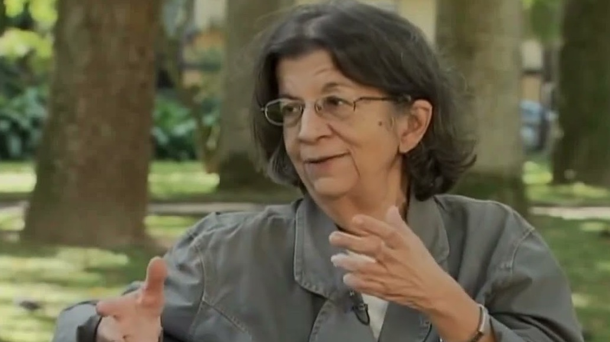

Tese de doutorado · 1988
Rio Metrópole: a produção social da imagem urbana
Tese defendida na Universidade de São Paulo, sob orientação de Eva Alterman Blay, sobre imagem urbana, metrópole, comunicação e cultura urbana.

Em memória
14 de junho de 1944 — 9 de dezembro de 2011
Socióloga · Professora do IPPUR/UFRJ · Criadora da Cartografia da Ação
«Viva a vida!»
— seu jeito particular de se despedir
Ana Clara Torres Ribeiro foi uma das mais importantes intelectuais brasileiras dedicadas ao estudo dos movimentos sociais, particularmente os urbanos. Socióloga de formação, trilhou um caminho singular entre as Ciências Sociais, a Geografia e o Planejamento Urbano, conjugando sempre pesquisa, ensino e militância.
Carioca, nascida em 1944, era filha de Arthur Eugênio Magarinos Torres Filho e Clara da Conceição Magarinos Torres. A mãe, violinista, e o avô maçom — que não fazia distinção entre o progresso de homens e mulheres — garantiram às filhas ampla oportunidade de estudo. Ana Clara começou o piano aos quatro anos e formou-se em música pelo Conservatório Brasileiro de Música aos dezesseis, estudando composição, contraponto, harmonia e regência. Nessa mesma época perdeu o pai, «uma coisa brutal», que a fez mudar de vida. A formação musical, porém, ficou para sempre: «Acho que boa parte da minha cabeça vem da música, não vem da Universidade — ela vem da harmonia e da articulação mental matemática.»
Feito o supletivo em Copacabana, ingressou em 1964 no curso de Sociologia da PUC-Rio — admitidamente sem saber ainda o que era a UNE. Como bolsista de iniciação científica no Instituto de Ciências Sociais da Universidade do Brasil, na rua Marquês de Olinda, conviveu com as diferentes tendências políticas do período mais duro da ditadura. Teve mestres inesquecíveis, que ela própria nomeava com gratidão: Helena Lewin, Miriam Limoeiro, Manoel Maurício de Albuquerque, Evaristo de Moraes Filho e Cândido Mendes. Graduou-se em 1967.
Em 1969 tornou-se auxiliar de ensino da UFRJ, mas a repressão tornou a docência insustentável: «Eu dava aula para cento e vinte alunos com a polícia dentro da sala de aula.» Pediu demissão em 1972 e seguiu por trajetórias fora da estrutura regular — do IBRADES à Fiocruz, onde pesquisou as campanhas sanitárias no programa de Sérgio Arouca. Demitida e fichada no SNI, grávida do terceiro filho e sem recursos, foi socorrida por Helena Lewin, que lhe apareceu na maternidade com uma oferta de trabalho.
Antes do mestrado, recebeu dois «nãos» que lhe ensinaram uma lição que transmitiria aos orientandos: «Só merece um sim quem aguenta um não.» O sim veio do IUPERJ, onde fez o mestrado em Sociologia (1977), orientada por Luiz Antonio Machado da Silva, pesquisando trabalho, mercado informal e espaço urbano. Nos anos seguintes, por cerca de uma década, ensinou sociologia urbana no mestrado de Geografia da UFRJ — entre seus alunos estavam Marcelo Lopes de Souza e Ruy Moreira. Em 1978, o encontro com Milton Santos introduziu definitivamente em seu pensamento a dimensão do espaço.
No início dos anos 1980 ingressou no IPPUR/UFRJ, onde permaneceria por quase três décadas. Doutorou-se em Sociologia na USP em 1988, com a tese Rio Metrópole: a produção social da imagem urbana, orientada por Eva Alterman Blay. Em 1998 criou o Lastro — Laboratório da Conjuntura Social: tecnologia e território e a disciplina Teorias da Ação, formando gerações de mestrandos e doutorandos. O nome do laboratório carrega sua metáfora favorita: na navegação, o lastro faz com que o navio «navegue, mas não vire e não se perca». Foi pesquisadora 1A do CNPq, integrou o programa Cientista do Nosso Estado (Faperj) e, em 2011, foi aprovada no concurso de Professora Titular e eleita presidenta da ANPUR para a gestão 2011–2013.
À América Latina dedicou-se por uma «dívida de geração»: «A minha dívida de geração era a América Latina, e eu não me conformei com essa perda.» A partir de 1999 coordenou o Grupo de Trabalho Desenvolvimento Urbano da CLACSO, reconduzido por três ciclos consecutivos, articulando pesquisadores de Bolívia, Colômbia, Uruguai, Argentina e El Salvador e participando do Fórum Social Mundial de Porto Alegre.
Sua pesquisa começou pela compreensão da importância dos movimentos sociais para a transformação das condições de existência das classes populares no Brasil. Com o avançar de seu trabalho, mostrou que a cidade é palco central da luta política e que a ação social, dotada de alta complexidade, funde cultura e política e se manifesta especialmente no espaço urbano. Desse percurso nasceu um novo campo de pesquisa nas ciências sociais: a Cartografia da Ação Social. Entre seus escritos, o de maior sentido pessoal era o artigo «Cidade e capitalismo periférico: em direção à experiência popular» (revista Margem Esquerda, 2008), no qual reuniu suas dívidas espirituais — o marxismo, a América Latina, o pensamento social crítico. Nos últimos anos, propôs o conceito de «crise societária» — não apenas crise social, mas crise da totalidade social — para ler o Brasil contemporâneo.
Participou ativamente da vida política do país: da militância no Rio de Janeiro sob a ditadura ao Fórum Nacional de Reforma Urbana, presente desde a Assembleia Constituinte. E nunca deixou de compor: o Memorial que escreveu para o concurso de titular foi construído como uma composição musical, retraçando em compassos os ritmos, temas e melodias de sua trajetória intelectual — porque ela compunha magistralmente, com as diferentes disciplinas, as cartografias da ação social, das resistências e das insurgências.
A Cartografia da Ação, campo que criou, parte de uma intuição poderosa: não podemos compreender a vida social na cidade em esferas delimitadas pelas disciplinas — sociologia, política, economia, história, geografia, arquitetura. A existência social não pode ser dividida; ela responde por uma totalidade complexa que reúne, no mesmo campo, os fragmentos disciplinares produzidos pela modernidade.
Ao longo da trajetória, debruçou-se sobre temas que emergiram desde os anos 1970: reprodução social no capitalismo periférico, trabalho informal e marginalidade, territórios e saberes locais, técnica, comunicação e dinâmica social — sempre com a convicção de que compreender o presente é uma responsabilidade científica e um gesto de esperança.
Tese de doutorado · 1988
Tese defendida na Universidade de São Paulo, sob orientação de Eva Alterman Blay, sobre imagem urbana, metrópole, comunicação e cultura urbana.
Organização · 2011
Coletânea organizada com Andrelino Campos e colaboradores (Letra Capital).
Livro
Reflexões sobre as apropriações do espaço urbano e os sentidos da ação coletiva.
Coletânea
Síntese de sua vida profissional e acadêmica, organizada por ela mesma para o concurso de Professora Titular da UFRJ, reunindo seus 73 artigos e capítulos.
Livro · 2000
Rio de Janeiro: FASE, 167 p.
Livro · 2000
Buenos Aires: CLACSO.
Livro · 2003
Com G. Grazia. Petrópolis: Vozes / Fórum Nacional de Participação Popular, 118 p.
Livro · 2003
Montevidéu: Departamento de Sociologia, Facultad de Ciencias Sociales, Universidad de la República, 25 p.
Organização · 2004
Buenos Aires: CLACSO, 371 p.
Organização · 2005
Com H. M. Tavares, J. Natal e colaboradores. Rio de Janeiro: Arquimedes, 486 p.
A partida de Ana Clara, em dezembro de 2011, causou profunda comoção. Colegas, instituições e revistas dedicaram-lhe livros, seminários e edições especiais que mantêm vivo seu pensamento.
«Tratava todos com a mesma afetuosidade e disponibilidade, do mais simples funcionário ao mais importante dirigente. Era uma pessoa capaz de escutar e dialogar com o pensamento do outro, revelando o caminho do exercício da investigação crítica e autônoma.»
— Tamara Tania Cohen Egler, amiga e parceira de mais de 20 anos, na homenagem do IPPUR/UFRJ
Livro · 2012
Organizado por comissão do Lastro, IPPUR e Anpur, reúne o Memorial de seu concurso de titular, a conferência e o texto-guia — o ponto de partida da coletânea de sua obra.
Ver no Observatório das Metrópoles ↗Revista · 2013
A revista dedicou um número à professora, uma de suas primeiras apoiadoras e integrante da Comissão Científica desde 2000.
Ler o editorial ↗Livro · 2016
Organização de Tamara Cohen Egler, Hector Atílio Poggiese e Elis de Souza (Letra Capital), lançado por ocasião dos dez anos de sua partida.
Ver no IPPUR ↗Seminário + livro · 2021/2022
Resultado do seminário «Atualidade do pensamento de Ana Clara Torres Ribeiro», realizado no IPPUR em 2021: 364 páginas dedicadas a manter vivo o campo da Cartografia da Ação.
Ver no IPPUR ↗Entrevista
Em sua própria voz: trajetória, pesquisa e reflexões sobre os movimentos populares, na coleção Movimentos Populares do INCT Participa.
Ler a entrevista (PDF) ↗Nota · 2011
Nota da UFRJ sobre sua partida, seguida da homenagem escrita pela professora Tamara Tania Cohen Egler.
Ler a nota ↗Texto em preparação pela família — em breve.
Mais fotos em breve.